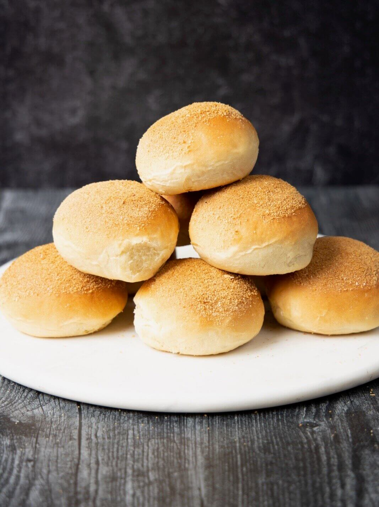

Sa bawat kanto at tahanan sa Pilipinas, ang pandesal ay maaaring matagpuan, anuman ang oras ng araw. Ito ay
kilala bilang pambansang tinapay ng ating bansa at isa sa pinakapopular na pagkain sa umaga o meryenda. Sa
tuwing hinahagkan mo ang mainit na tinapay na ito, nagbibigay ito ng isang pamilyar at maligayang pakiramdam
na walang katulad.
Ang pandesal ay kilala sa kanyang malasutlang labas, at sa unang pagkagat, makikita mo ang malambot na katas
sa iyong bibig. Ang pagka-bilog at kulay-puti nito ay nagbibigay ng tuwang walang kapantay. Hindi lamang ito
isang simpleng tinapay, ito rin ay isang tanda ng pagiging Pinoy at ng ating malalim na kultura.
Ang pagluluto ng pandesal ay isang sining na pinagtagpi-tagpi ng mga ating mga ninuno. Sa bawat lalagyan nito,
makikita mo ang kanilang kasaysayan at pagsasama-sama. Ang mga pangunahing sangkap na harina, asukal,
mantikilya, tubig, at lebadura ay pinagsasama-sama upang likhain ang perpektong sangkap. Ang pagdaragdag ng
lebadura ang nagbibigay ng kahalumigmigan at kabuhayan sa bawat hibla ng tinapay. Sa bawat paggawa ng
pandesal, nagmamana tayo ng tradisyon at pagpapahalaga sa pagkain.
Sa Pilipinas, ang pandesal ay hindi lamang isang pagkain, ito rin ay nagbibigay-daan sa mga tao upang
magkakasama. Madalas na makakita tayo ng mga pandesalang kahon sa mga karinderya, kanto, at mga panaderya. Ito
ay nagpapakita ng diwa ng pagiging magkaugnay at pagtulong-tulong ng mga tao sa isang komunidad. Sa tuwing
bibili ka ng pandesal, hindi lamang ikaw ang kumakain nito, kundi ang buong pamilya o mga kaibigan mo rin. Ito
ay nagpapakita ng pagpapahalaga natin sa pagkakaisa at pamilya.
Ang pagkaing ito ay may maraming paraan upang ito'y pagsaluhan. Maaari itong ihain na mainit at sariwa, lalong
nakakapagpalasap ng lasa nito. Maaari ring pahiran ito ng kahit anong palaman na iyong nais. Karaniwang
napapuno ito ng mantikilya, palamang pina-kamahal, palamang bawang, o iba pang mga klasikong palaman. Anuman
ang iyong piliin, tiyak na ang bawat kagat ay puno ng sarap at kaligayahan.
Ang pandesal ay hindi lamang pang-umaga o meryenda, ito rin ay naging bahagi ng ating kultura at kasaysayan.
Ito ay naging saksi sa mga pagbabago at kaganapan sa bansa. Mula sa mga panahong Kastila, Amerikano, at Hapon,
nanatiling matatag at minamahal ng mga Pilipino ang pandesal.
Sa huli, ang pandesal ay hindi lamang isang simpleng pagkain. Ito ay simbolo ng pagiging Pilipino, kasamaan,
at pagkakaisa. Sa tuwing tayo'y kumakain nito, nagbabalik-tanaw tayo sa ating mga pinagmulan at nagpapatatag
sa ating pagkakakilanlan bilang mga Pilipino.
Kaya sa susunod na pagkakataon na matikman mo ang pandesal, huwag kalimutan na ito ay higit pa sa isang
tinapay. Ito ay tanda ng pagmamahal sa ating kultura at bayan. Ibahagi ang sarap ng pandesal sa mga mahal mo
sa buhay at ipagdiwang ang kahalagahan ng pagsasama-sama bilang isang pamilya.
Pandesal: Ang Pambansang Tinapay ng Pilipinas

.jpg)
.jpg)